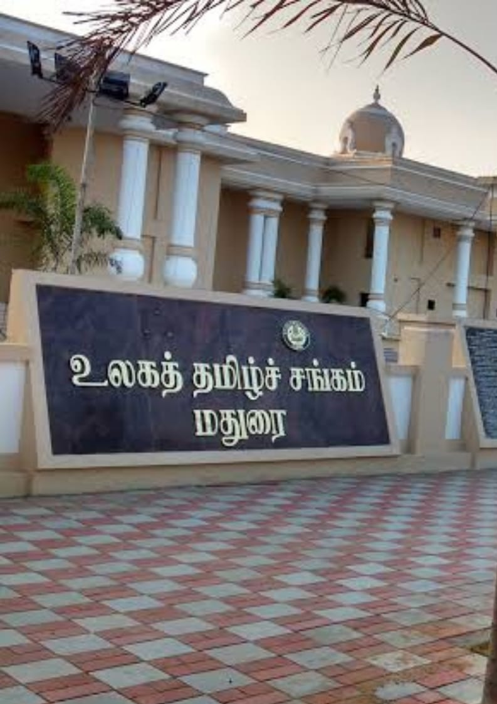
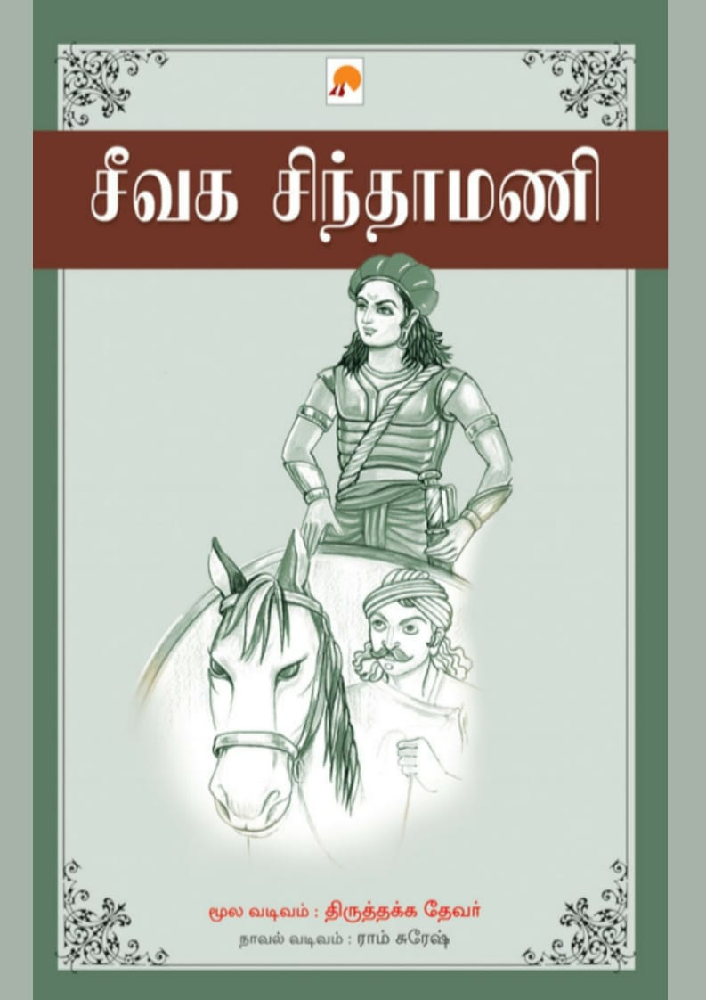
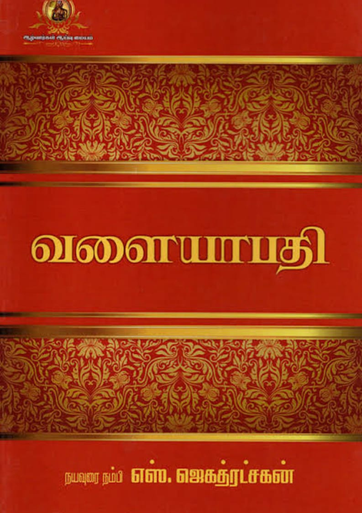
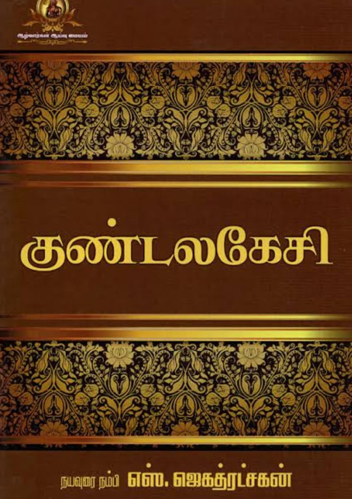
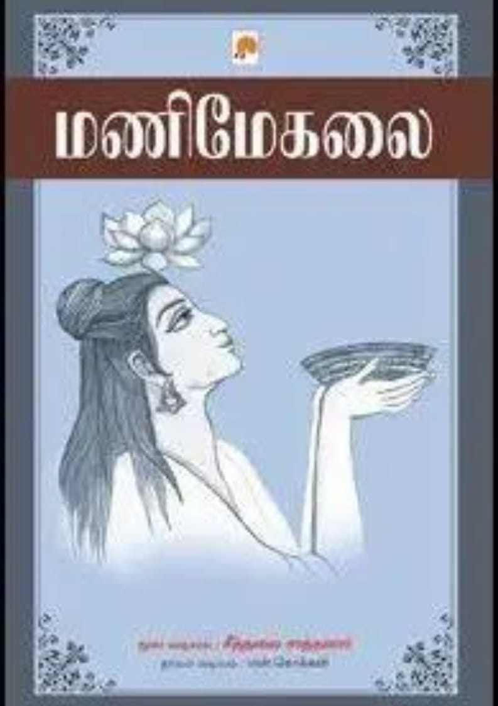
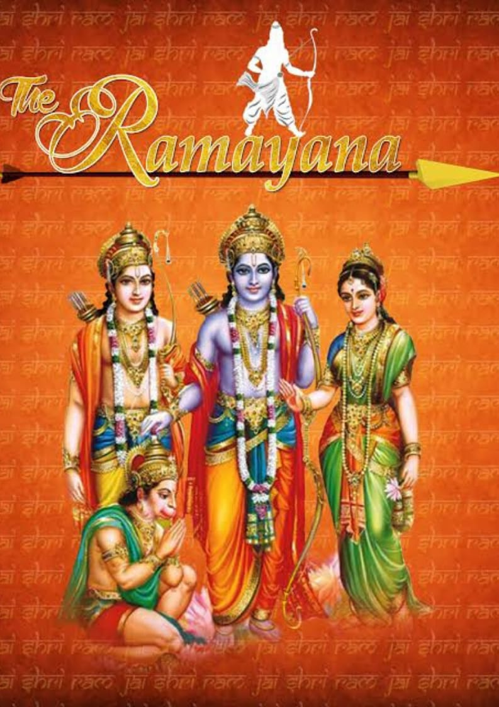

SANGAMS

According to the Tamil legends, there were three Sangams (Academy of Tamil poets) held in the ancient South India popularly called Muchchangam namely Head Sangam, Middle Sangam and Last Sangam period.
SILAPPATHIKARAM
The Tale of an Anklet, also referred to as Silappathikaram or Silappatikaram, is the earliest Jain Tamil epic. It is a poem of 5,730 lines in almost entirely akaval (aciriyam) meter. The epic is a tragic love story of an ordinary couple, Kannaki and her husband Kovalan.
CIVAKA CINTAMANI

Civaka Cintamani means "fabulous gem," is also known by alternative name Mana nool or "Book of Marriages." It is considered one of the five great Tamil epics according to later Tamil literary tradition.Civaka Cintamani is a classical epic poem. It is a Jain religious epic authored by Tirutakkatevar.
VALAYAPATHI

Valayapathi, is one of the five great Tamil epics, but one that is almost entirely lost. It is a story of a father who has two wives, abandons one who gives birth to their son, and the son grows up and seeks his real father.Valayapathi is written by an unknown Jain ascetic.
KUNDALAKESI

Kundalakesi, also called Kuntalakeciviruttam, is a Tamil Buddhist epic written by Nathakuthanaar, likely sometime in the 10th-century. The epic is a story about love, marriage, getting tired with the married partner, murder and then discovering religion
MANIMEKALAI

Manimekalai, is a Tamil epic composed by Kulavāṇikaṉ Seethalai Sataṉar probably around the 6th century. It is an "anti-love story", a sequel to the "love story" in the earliest Tamil epic Silappadikaram, with some characters from it and their next generation
RAMAYANAM

Ramayana is one of the two major Sanskrit epics of ancient India and important text of Hinduism, the other being the Mahābhārata. The epic, traditionally ascribed to the Maharishi Valmiki, narrates the life of Rama, a legendary prince of Ayodhya city in the kingdom of Kosala
MAHABARATHAM

Mahabaratham, the epic tale of the Kurukshetra War which was fought between the Kauravas and the Pandavas. Krishna, the avatar of the Hindu deity Vishnu, guides the Pandavas to victory in this war
TOLKAPPIYAM

Tolkappiyam is the most ancient extant Tamil grammar text and the oldest extant long work of Tamil literature. It is believed by various traditions to be one of the twelve disciples of Agattiyar. Tolkappiyar (epithet) is the author of Tolkappiyam.